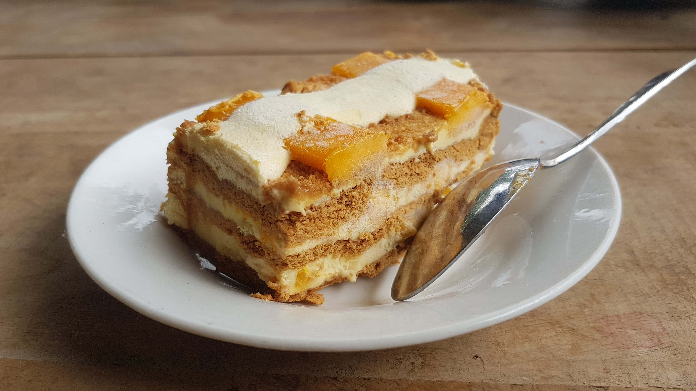

Mango Float

Description
Mango float is a no-bake filipino dessert comprised of mangoes, whipped cream, and graham crackers
Ingredients
- 5 ripe mangoes
- 2 cups whipped cream
- 1/2 cup sweetened condensed milk
- 1/2 tsp vanilla extract
- 1/2 400g box of Honey Maid graham crackers
Steps
- Peel mangoes, slice in half, slice the halves lengthwise into thin strips. Set aside
- Using electric mixer, beat whipping cream in medium bowl until doubled in size. Add condensed milk and vanilla extract. Mix until combined
- Place layer of graham crackers at bottom of 8in baking dish. Fill gaps with trimmed crackers. Spread layer of cream mixture evenly on top of crackers then top with layer of mango slices
- Repeat, ending with slices of mango
- Refrigerate overnight or until completely set then serve :)